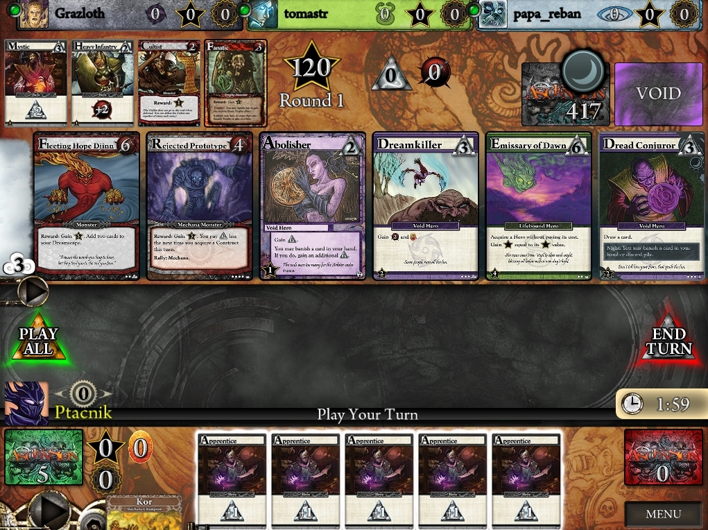
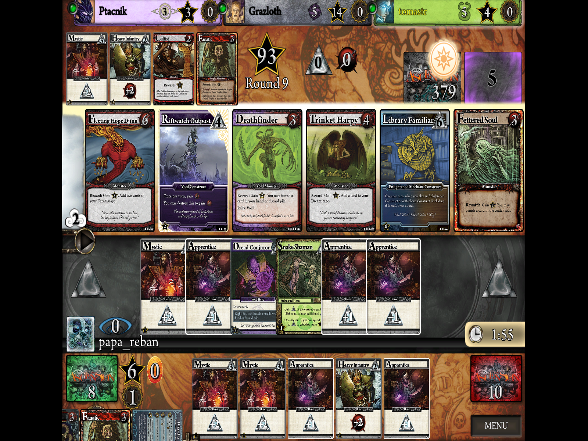

Naše stránka se zabývá stolní hrou Ascension. Pojďte si zahrát s námi!
May 1, 2018
Dnes jsme se rozhodly, že je čas otestovat si Ascension jako aplikaci na Steamu. Hra Ascension: Deckbuilding Game je v 51% slevě do 2.5.2018, takže ješte máte čas koupit si hru i Vy.
Hra Ascension na Steame byla oceněná jako 2011 Golden Geek award winner (Best Mobile/Handheld Game). To už se možná zdá celkem dávno, ale hra je stále poměrně populární, a tím, že i mně se daří rozšiřovat hru mezi kamarády, je to nenápadné dostávání hry Ascension do světa.
Tak či onak, co se týká počítačové aplikace, musím uznat, že se mi zdá poměrně zanedbaná.
Jak můžeme vidiět na obrázku níže, hra má poměrně zemité barvyy, to by nemuselo být chybou, ale grafika samotná je príliš jednoduchá. Obrázek pochází z přímo probíhající hry mých kamarádů, ktěří mi ji oscreenovali. Na obrázku vidíme 4 nicky a jejich avatary. Výhodou aplikace na Steam (narozdíl od aplikace na mobil) je, že obsahuje všechny dosud vydané karetní rozšíření a když člověk zaplatí za danou hru, už nemusí nic řešit. V aplikaci na mobil je nevýhoda, že člověk musí doplatit za rozšíření - avšak hra na mobil je zase zadarmo. Potom záleží na člověku, jestli chce všechna rozšíření, anebo mu stačí základní.

+Každopádně, nastavení hry je trošku neúplné: nedokážeme nastavit rozlišení hry jinak, jako je na obrázku 2. To znamená, že člověk má vždycky buď hru nepříjemně roztáhnutou anebo má černé okraje. Na druhou stranu je fajn, že dokážeme měnit hudbu a design hrací desky podle toho, jaké rozšíření máme rádi, anebo jaká hudba z jednoho nebo druhého rozšíření sa nám líbí.

Hratelnost hry je dobrá, když nepočítáme nevýrazné určení, kdo je na tahu, anebo zvláštní animace některých karet a zvukové efekty. Jinak beru jako výhodu, že se karty dají zvětšovat. Ale na začátku jsem s tím měla problém, protože se mi to zdálo velmi neintuitivní, a to beru jako nevýhodu. Člověk musí zvvětšovat kartu jedním tlačítkem na myši a druhým ji zase zmenšiť. A to je nepohodlné
Napříč všem těmto problémům uznávam hru jako fajn - příjemná náhrada za jiné karetní hry na PC. Hru testuji poměrně krátce, a nedokážu určit, jestli mě bude na PC bavit dlouhodobě.
Avšak předpokladám, že stolní verze s reálnými kartami mě bavit bude. Přece jen je to něco jiné držet v ruce reálné karty.
Navíc je náročnější hrát sám s kartami v rukou. V počítačové verzi aplikace upozorňuje hráče, že ještě neodohrál nějaké herní efekty a podobně. Možná je dobrá teto aplikace pro začátečníky, anebo pro ty, kterým se nechce kupovat drahé krabicové verze hry.